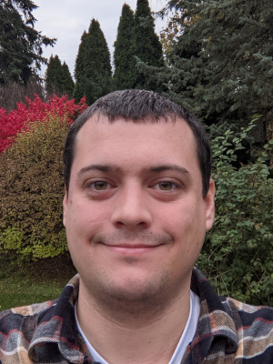

Justin Browne
About Me
Projects
- Flip
- Flip a coin. How long of a streak can you get?
- Scoreboard
- Keep track of scores.
Resume
Experience
- 2022–2026
-
Software Developer, SolidCAM
- Led development of an automatic testing system.
- Researched and developed toolpath generation algorithms for CAM software.
- Experimented and collected data to guide algorithm development.
- Developed algorithms needed for direct toolpath editing by the user.
- 2011–2021
-
Graduate Research Assistant, National Superconducting Cyclotron Laboratory
- Conducted nuclear physics research, focusing on nuclear astrophysics.
- Designed and executed experiments to investigate nuclear phenomena, analyze data, and draw conclusions.
- Collaborated with a multidisciplinary team of scientists, engineers, and technicians to plan and execute experiments.
- Developed and implemented data analysis algorithms and software tools to process and interpret experimental data.
- Maintained and calibrated experimental apparatus.
- 2010
-
Undergraduate Research Assistant, National Superconducting Cyclotron Laboratory
- Developed a micro-channel plate detector based beam intensity detector.
- Worked on the development of the Active Target Time Projection Chamber.
- 2007–2011
-
Undergraduate Research Assistant, University of Notre Dame
- Worked on stable beam experiments to study the 12C(12C,n)23Mg reaction, using the FN Tandem Van de Graaff accelerator.
Skills
- Programming Paradigms: Some programming fields I have experience in are systems programming, data formats, and data manipulation.
- Attention to Detail: I try to ensure that a system not only works, but works in the right way.
- Version Control: I have a good understanding of the git data model and like to keep a clean, understandable history.
- Programming Languages: I have experience with many programming languages. Those I have the most experience with are Rust, C++, C, Python, and Javascript.
- Simulations: I've used and built physical simulation programs, such as astrophysical models and computational fluid dynamics.
- Low-Level Programming: I have designed and built electronic circuits and computers from basic parts, and have programmed the computers with machine and assembly code.
- Data Acquisition and Analysis: I have built the hardware and software systems needed for collecting data and the software for analyzing that data.
- CAD/CAM: I have experience with CAD and CAM systems, including SolidCAM, Solidworks, Siemens NX, Autodesk Inventor, and FreeCAD
Education
- 2021
-
Michigan State University, Department of Physics and Astronomy, East Lansing, MI
Ph.D. in Physics
Thesis: https://d.lib.msu.edu/etd/49592 - 2013
-
Michigan State University, Department of Physics and Astronomy, East Lansing, MI
M.S. in Physics - 2011
-
University of Notre Dame, Department of Physics, Notre Dame, IN
B.S. in Physics
Publications
- K. Hermansen et al. "β-decay measurements near the N=40 island of inversion to quantify cooling of accreted neutron star crusts" (2026) Phys. Rev. C 114, 015806
- A. Lauer-Coles et al. "34Ar(α,p)37K reaction rate from proton scattering on 37K and its impact on properties of modeled x-ray bursts" (2026) Phys. Rev. C 114, 025801
- J. Browne et al. "First Direct Measurement Constraining the 34Ar(α,p)37K Reaction Cross Section for Mixed Hydrogen and Helium Burning in Accreting Neutron Stars" (2023) Phys. Rev. Lett. 130, 212701
- S. Hallam et al. "Exploiting Isospin Symmetry to Study the Role of Isomers in Stellar Environments" (2021) Phys. Rev. Lett. 126, 042701
- J. Browne "Measurement of 34Ar(α,p)37K using the JENSA Gas Jet Target" (2021) DOI: 10.25335/w4c3-9e32
- W.-J. Ong et al. "β Decay of 61V and its Role in Cooling Accreted Neutron Star Crusts" (2020) Phys. Rev. Lett. 125, 262701
- Z. Meisel et al. "Nuclear mass measurements map the structure of atomic nuclei and accreting neutron stars" (2020) Phys. Rev. C 101, 052801(R)
- C. Wolf et al. "Constraining the Neutron Star Compactness: Extraction of the 23Al(p,γ) Reaction Rate for the rp Process" (2019) Phys. Rev. Lett. 122, 232701
- K. Schmidt et al. "Status of the JENSA gas-jet target for experiments with rare isotope beams" (2018) Nucl. Instrum. Meth. A 911, 1
- A. Kankainen et al. "Measurement of key resonance states for the 30P(p,γ)31S reaction rate, and the production of intermediate-mass elements in nova explosions" (2017) Phys. Lett. B 769, 549
- W.-J. Ong et al. "Low-lying level structure of 56Cu and its implications for the rp process" (2017) Phys. Rev. C 95, 055806
- D. W. Bardayan et al. "The new JENSA gas-jet target for astrophysical radioactive beam experiments" (2016) Nucl. Instrum. Meth. B 376, 326
- Z. Meisel et al. "Time-of-flight mass measurements of neutron-rich chromium isotopes up to N=40 and implications for the accreted neutron star crust" (2016) Phys. Rev. C 93, 035805
- A. Kankainen et al. "Angle-integrated measurements of the 26Al(d,n)27Si reaction cross section: a probe of spectroscopic factors and astrophysical resonance strengths" (2016) Eur. Phys. J. A 52, 6
- Z. Meisel et al. "Mass Measurement of 56Sc Reveals a Small A=56 Odd-Even Mass Staggering, Implying a Cooler Accreted Neutron Star Crust" (2015) Phys. Rev. Lett. 115, 162501
- B. Bucher et al. "First Direct Measurement of 12C(12C,n)23Mg at Stellar Energies" (2015) Phys. Rev. Lett. 114, 251102
- Z. Meisel et al. "Mass Measurements Demonstrate a Strong N=28 Shell Gap in Argon" (2015) Phys. Rev. Lett. 114, 022501
- C. Langer et al. "Determining the rp-Process Flow through 56Ni: Resonances in 57Cu(p,γ)58Zn Identified with GRETINA" (2014) Phys. Rev. Lett. 113, 032502
- D. Suzuki et al. "Resonant α scattering of 6He: Limits of clustering in 10Be" (2013) Phys. Rev. C 87, 054301
- D. Suzuki et al. "Prototype AT-TPC: Toward a new generation active target time projection chamber for radioactive beam experiments" (2012) Nucl. Instrum. Meth. A 691, 39
- D. Suzuki et al. "Test of a micromegas detector with helium-based gas mixtures for active target time projection chambers utilizing radioactive isotope beams" (2011) Nucl. Instrum. Meth. A 660, 64